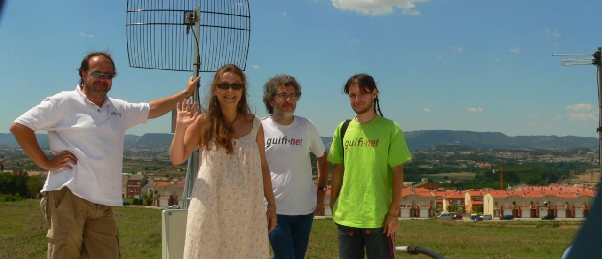

A crise de saúde pública global resultante da pandemia de coronavírus, obrigou a generalidade dos países à suspensão do ensino presencial e à passagem súbita para modelos de ensino/aprendizagem online, tornando evidente o fosso digital existente, mesmo entre os jovens, entre os que dispõem e os que não dispõem de computadores e acesso à Internet a partir de casa. Em Portugal, estima-se que um em cada cinco alunos não tem computador em casa e 5% das famílias com crianças até aos 15 anos não tem Internet. Este número, só no ensino básico, poderá chegar aos 50 mil alunos [1].
A constatação deste panorama levou à mobilização de esforços por parte da sociedade civil, assistindo-se a diversas iniciativas, de Câmaras Municipais a grupos de Facebook, passando por Organizações Não Governamentais, visando dotar estes jovens alunos dos equipamentos e serviços que lhes permitam acompanhar as atividades letivas. Ciente da situação, o próprio Ministério da Educação avançou sugestões alternativas destinadas a mitigar este problema [2]., estando em curso, inclusivamente, o “ressuscitar” da telescola.
Neste enquadramento, o Capítulo Português da Internet Society tomou conhecimento de um segmento particularmente desfavorecido entre os mais vulneráveis: os cerca de 7 mil jovens residentes (88% dos quais com idades entre os 6 e os 17 anos) nas cerca de 400 Casas de Acolhimento existentes em Portugal [3]. destinadas a crianças e jovens em risco, muitos deles sem dispor de computadores, tablets ou smartphones e sem ligação à Internet nas suas residências.
Procurando fazer face ao fosso digital e dar resposta a este segmento da população dos mais carenciados, o Capítulo Português da Internet Society concebeu o Projeto SOS Digital. Contrariamente à generalidade das iniciativas que têm sido anunciadas que se caracterizam por serem avulsas e responder a uma situação de emergência, o Projeto SOS Digital visa mobilizar os associados do ISOC Portugal, todas as pessoas de boa vontade, assim como todas as instituições que queiram apoiar esta iniciativa, com especial realce para indústria das tecnologias de informação e comunicação, desde fabricantes de computadores a fornecedores de serviços de acesso à Internet, para equipar as Casas de Acolhimento de Crianças e Jovens em Risco com computadores, serviços de acesso à Internet e serviço de apoio e suporte técnico, para que os jovens em acolhimento não vejam agravada a situação de carência em que se encontram.
Muitos têm a imagem de que Portugal é um país avançado na utilização da Internet ao serviço da cidadania e da economia. Esta ideia ajuda a camuflar a realidade de todo um conjunto de sectores da população que não têm acesso à Internet de todo, ou têm-no em condições tais que não podem tirar partido completo das suas potencialidades.
Esta iniciativa, pensamos nós, poderá constituir um embrião de um projeto de luta contra o “Digital Divide”, isto é a desigualdade existente no acesso pleno aos benefícios da Sociedade da Informação, promovendo iniciativas que levem ao incremento dos meios de acesso à Internet em condições adequadas a sectores desfavorecidos da Sociedade Portuguesa. Seja através da aquisição de mais equipamentos, seja pelo aumento das competências digitais, seja ainda pela promoção de redes comunitárias e meios de acesso à Internet auto-sustentáveis.
Este tipo de iniciativas enquadram-se no projeto mundial da Internet Society intitulado Community Networks.

Guifi.net é uma rede comunitária na região de Barcelona particularmente relevantes nestes tempos de crise.
[1] Será a distância igual para todos?
[2] Intervenção educativa para crianças e jovens em situação de vulnerabilidade
[3] CASA 2018 – Relatório de Caracterização Anual da Situação de Acolhimento das Crianças e Jovens